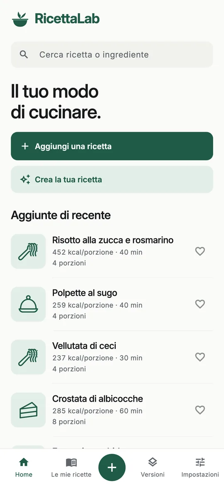
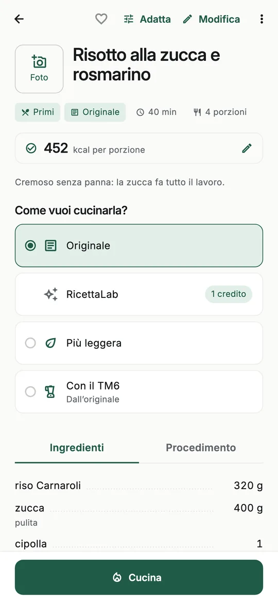
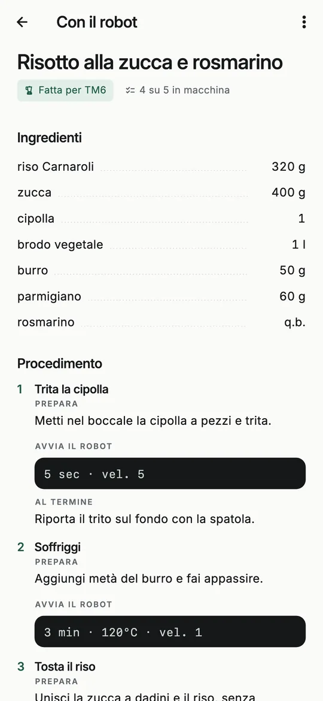
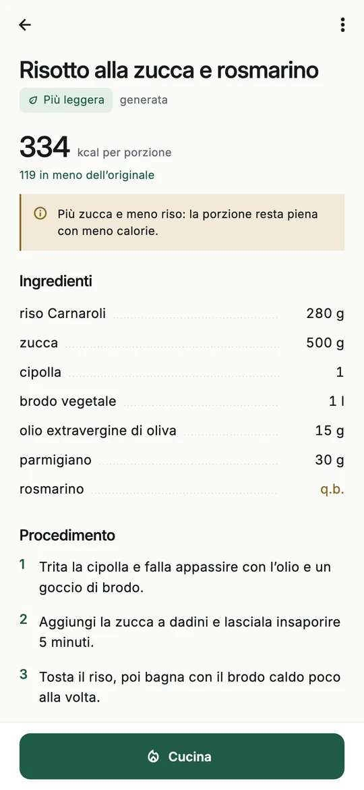

Presto disponibile su Google Play
Una ricetta.
Il tuo modo di cucinarla.
Un link, una foto del ricettario della nonna, un testo o la tua voce: RicettaLab la mette in ordine, calcola le calorie per porzione e la riscrive per il tuo robot da cucina.
App per Android, ora in test. Vuoi provarla prima di tutti? Scrivici: ti aggiungiamo all'elenco dei tester.
Come funziona
Da qualunque fonte, una scheda pulita.
Dosi convertite in grammi, procedimento diviso passo per passo, porzioni e calorie. Prima di salvare controlli tu: ogni campo si corregge.
-
Un link
Incolla l'indirizzo o condividi la pagina dal browser.
-
Una foto
La pagina di un libro o un foglio scritto a mano. Si legge sul telefono.
-
Un testo
Da un messaggio, una nota, un'email: incollalo così com'è.
-
La voce
Detta la ricetta, o cosa c'è in frigo: ti proponiamo tre idee.
Trasforma
Una ricetta non è un contenuto fisso. È una base.
Ogni trasformazione produce una versione nuova. L'originale resta com'era: chi ha salvato una carbonara vuole ritrovare la carbonara.
-
01
Originale
La ricetta messa in ordine: ingredienti in grammi, passi numerati, porzioni e calorie da una banca dati di alimenti italiani. Ogni dato dice da dove viene.
-
02
Per il robot
Il procedimento riscritto con tempo, temperatura e velocità per il tuo robot da cucina, da una tabella curata a mano. Quello che nel boccale non si fa viene detto, e se le dosi non ci stanno l'app si ferma.
-
03
Più leggera
Sostituzioni che tolgono calorie senza snaturare il piatto, con il conto di quanto si risparmia a porzione.
-
04
Adattata
Per sei invece che per quattro, senza latte, con quello che hai: la stessa ricetta, cambiata dove serve e solo lì.
Lo yogurt al posto della panna impazzisce se bolle. RicettaLab lo sa, e invece di proportelo ti avvisa. Conta il ruolo che un ingrediente ha nel piatto, non solo le sue calorie.
L'app
Poche parole, i dati in vista.

Le tue ricette 
La scheda 
Per il robot 
Più leggera
Di cosa ti puoi fidare
Non tira a indovinare. Te lo dice.
-
Ogni dato ha una fonte
Letto dal sito, interpretato o mancante: un segno colorato lo dice, e il dettaglio è a un tocco.
-
Le ricette restano tue
Salvate sul telefono, funzionano senza rete. Accedi con Google solo per usare l'AI.
-
Niente foto altrui
Le immagini dei siti sono di chi le ha scattate: l'app mostra la fonte e la apre. L'unica foto è quella del piatto che hai cucinato tu.
-
Calorie oneste
Calcolate dagli ingredienti o prese dal sito quando le dichiara, e l'app dice sempre quale delle due.
-
Robot senza invenzioni
Velocità e tempi vengono da una tabella scritta a mano, non da un modello che improvvisa.
-
Nessuna pubblicità
Né banner né profilazione. L'app si paga solo quando usi l'AI.
Crediti
Gratis per cucinare. Un credito quando lavora l'AI.
Importare, salvare e cucinare non costa niente. Le funzioni che usano l'AI costano un credito per pulsante, e se il risultato non va il credito torna da solo.
- Importare da link, foto, testo, voceGratis
- Salvare, cucinare passo per passoGratis
- Più leggera, Adatta, Per il robot1 credito
- Crea: tre proposte e la ricetta1 credito
Domande
Prima di installarla.
Con quali robot da cucina funziona?
Bimby® TM6 e TM7, Monsieur Cuisine, e un profilo generico per gli altri robot. I procedimenti sono adattamenti indicativi, non verificati su macchina e non ufficiali del costruttore.
Come posso provarla prima dell'uscita?
RicettaLab è in test su Google Play prima del rilascio. Scrivi a infogiogustudio@gmail.com con l'indirizzo Gmail che usi sul telefono Android: ti aggiungiamo ai tester e ti mandiamo il link per installarla dal Play Store.
Durante il test i tuoi commenti contano: cosa non funziona, cosa manca, quale ricetta non è stata capita.
C'è per iPhone?
Per ora solo Android.
Dove finiscono le mie ricette?
Sul telefono. Escono solo quando scegli tu: per importarle da un link, per usare l'AI o per condividerle con un link. I dettagli sono nell'informativa sulla privacy.
Posso condividere una ricetta con chi non ha l'app?
Sì. Il link si apre in qualunque browser; chi ha RicettaLab la salva con un tocco. Puoi togliere il link quando vuoi.
Cosa succede quando finiscono i crediti?
Tutto il resto continua a funzionare: le ricette salvate, l'importazione, le calorie, la cottura guidata. Servono crediti solo per le funzioni con l'AI.
Come elimino il mio account?
Dall'app, in Impostazioni → «Elimina account e dati». Oppure segui le istruzioni per l'eliminazione.
Trova una ricetta. Rendila tua.
L'app è in test prima dell'uscita su Google Play. Se vuoi provarla, scrivici: ti aggiungiamo ai tester, con dieci crediti in regalo.
Presto disponibile su Google Play